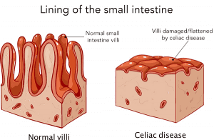

Celiac disease

SYMPTOMS:
The signs and symptoms of celiac disease can vary greatly and differ in children and adults. Digestive signs and symptoms for adults include:
- Diarrhea
-
Fatigue
-
Weight loss
-
Bloating and gas
-
Abdominal pain
-
Nausea and vomiting
-
Constipation
However, more than half the adults with celiac disease have signs and symptoms unrelated to the digestive system, including:
- Anemia, usually from iron deficiency
-
Loss of bone density (osteoporosis) or softening of bone (osteomalacia)
-
Itchy, blistery skin rash (dermatitis herpetiformis)
Mouth ulcers
-
Headaches and fatigue
-
Nervous system injury, including numbness and tingling in the feet and hands, possible problems with balance, and cognitive impairment
-
Joint pain
-
Reduced functioning of the spleen (hyposplenism)
CAUSES
Your genes combined with eating foods with gluten and other factors can contribute to celiac disease, but the precise cause isn't known. Infant-feeding practices, gastrointestinal infections and gut bacteria might contribute, as well. Sometimes celiac disease becomes active after surgery, pregnancy, childbirth, viral infection or severe emotional stress.
- When the body's immune system overreacts to gluten in food, the reaction damages the tiny, hairlike projections (villi) that line the small intestine. Villi absorb vitamins, minerals and other nutrients from the food you eat. If your villi are damaged, you can't get enough nutrients, no matter how much you eat